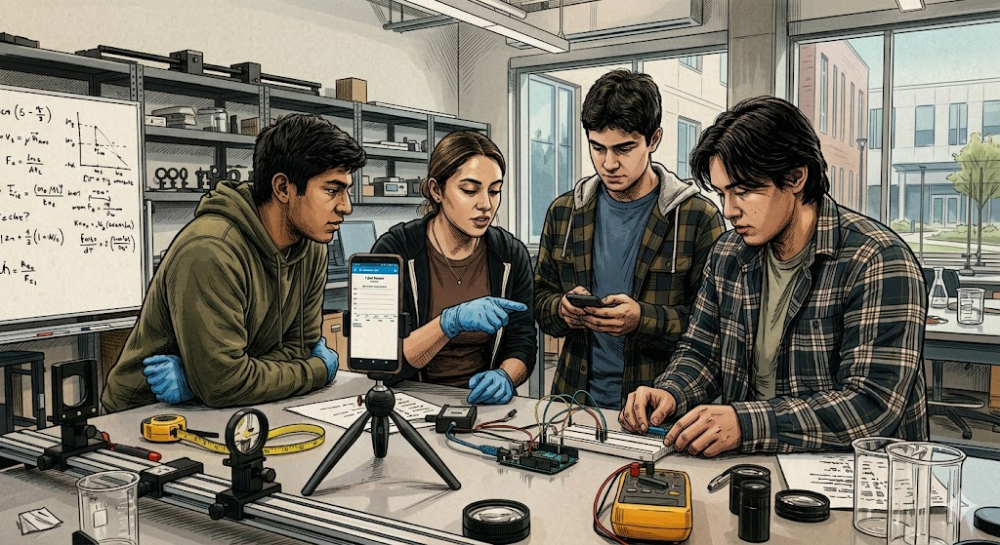

Comenzamos el Proyecto
Bienvenidos a Cinemática en Acción:
Vuestro Laboratorio en el Bolsillo.
¡Bienvenidos, investigadores de 4º de ESO!
Estáis a punto de comenzar "Cinemática en Acción", una aventura de 12 sesiones donde dejaréis de ser alumnos pasivos para convertiros en los protagonistas de vuestra propia ciencia.
A menudo pensamos que la Física son solo fórmulas abstractas en una pizarra, pero en este proyecto vamos a "tocar" la realidad. Nuestra misión será explorar el movimiento y descubrir los secretos de la fuerza que nos mantiene pegados al suelo: la
¿Qué vamos a hacer? A lo largo de las próximas semanas, vuestro equipo de 4 personas se enfrentará a experimentos clásicos y digitales, aprenderá a usar el smartphone como un laboratorio de bolsillo y dominará herramientas profesionales como
Todo vuestro trabajo culminará en la creación y defensa de un portafolio interactivo titulado "A nosotros g no nos sale...", donde demostraremos que en el laboratorio, los fallos son el verdadero motor del conocimiento.
¡El laboratorio os espera!"

El proyecto
Para que conozcáis a fondo qué competencias vamos a desarrollar, cómo nos organizaremos en estas 12 sesiones y por qué vuestro smartphone es la pieza clave, consultad este panel interactivo. En él encontraréis la 'radiografía' completa de nuestra aventura científica.